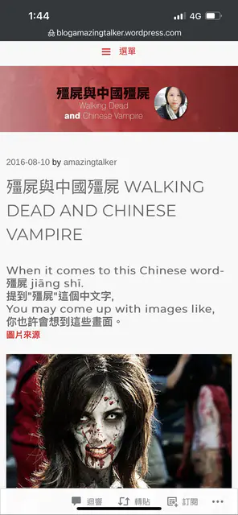
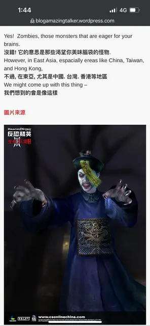
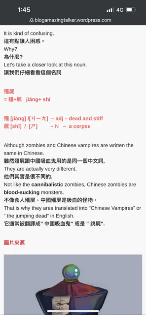

點擊上方的語言選單以切換語言
受到西洋電影的影響，很多人會本能地把「殭屍」直接翻成英文 zombie，但這其實並不準確。根據文化脈絡，殭屍的英文應該是 jiangshi（音譯）或 Chinese vampire（意譯；谷歌翻譯和臉書翻譯會將其翻成"中國的吸血鬼"）。
  
殭屍起源自中國傳統文化，是死後屍體因怨氣、屍氣或法力復活的產物。他們吸血、不畏打擊、懼怕陽光，只要額頭貼上符咒便會動彈不得。
民間信仰中，殭屍會隨著時間修煉，從最低級跳躍型進化為殭屍王，甚至進化為更高級的 魃（能引發乾旱與瘟疫）與 犼（能吐火吞龍）。《子不語》中甚至提到犼是殭屍的最終型態。
殭屍常見弱點包括：糯米、桃木劍、黑狗血、公雞血、童子尿等。在港片中，道士會使用這些道具來驅邪制殭。
這也是為甚麼《殭屍先生》的英譯是 Mr.Vampire 而不是 Mr.Zombie。
吸血鬼源於基督教文化，關於他們的起源有多個版本：
吸血鬼其實也是一種復活的屍體，因此港片中道士稱其為「西洋殭屍」。但吸血鬼與殭屍、喪屍不同的是：
被吸血鬼「初擁」的人，會永遠停留在當時的年齡，但知識與經驗會持續累積。有些看似年輕貌美的吸血鬼，實際上是最有權力的長老。
吸血鬼文化在西方盛行，例如《暮光之城》、《吸血鬼日記》等，都呈現了吸血鬼既浪漫又神秘的形象。
喪屍（zombie）與殭屍和吸血鬼截然不同：
喪屍片（如《活人生吃》、《屍速列車》、《行屍走肉》）多半帶有社會隱喻，常探討文明崩潰、人性極限等主題。
| 類型 | 殭屍 | 吸血鬼 | 喪屍 |
|---|---|---|---|
| 起源 | 中國民間信仰 | 基督教神話、西方傳說 | 科幻災難、病毒感染 |
| 食物 | 吸血 | 吸血 | 吃生肉、腦 |
| 弱點 | 陽光、糯米、逃木劍、符咒、黑狗血、公雞血、童子尿 | 陽光、大蒜、十字架、聖水、聖經、銀器 | 爆頭 |
| 智慧 | 隨修煉而升級 | 高智慧 | 無 |
| 代表作品 | 《殭屍道長》、林正英電影 | 《德古拉》、Twilight 系列 | 《行屍走肉》、《惡靈古堡》 |
總的來說，吸血鬼與殭屍、喪屍是截然不同的三種怪物：吸血鬼是有智慧與魅力的神秘存在；殭屍帶有濃厚的中國民間色彩，講究道法與屍變；喪屍則是現代災難片中的恐怖象徵。
瞭解它們的文化背景，不只能更深入欣賞相關影視作品，也有助於理解東西方文化對「死亡」與「復活」的不同想像。